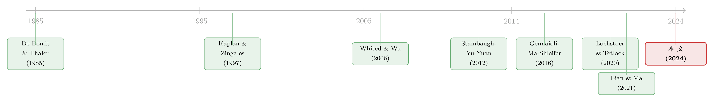

同一则「好消息」，凭什么放大一半异象、又压扁另一半？
本文读的是 He, Su & Yu (2024, Journal of Financial Economics)：当投资者上调对宏观生产率的预期，盈利、质量、困境、低风险这一组异象会变得格外强（多空价差高达每季度 3.73%），而价值、投资、规模这一组异象反而被压扁甚至翻负（每季度 −1.30%）；下调预期时则几乎完全反过来。把两组异象的「方向盘」交到同一个变量手里的，是融资约束。
1 一个长期悬而未决的问题
先抛一个让资产定价学者们头疼了几十年的问题：异象（anomalies）的收益，到底是不是被宏观基本面驱动的？
直觉上答案应该是「是」。规模、价值、盈利、投资——这些把股票横截面切开的特征，背后理应站着某种宏观风险：经济好的时候该赚多少、经济差的时候该亏多少，期望收益随宏观状态而变，天经地义。可一旦真去数据里找这条线，结果却出奇地令人沮丧。Lochstoer 和 Tetlock（2020）系统地把异象收益拆解成「现金流」与「贴现率」两部分，发现真实的宏观量（realized macro quantities）几乎解释不了异象收益的时间变化；Cochrane（2017）也早就把这件事列为悬案。一句话：真实的宏观基本面，和异象收益之间的联系，弱得出奇。
那是不是宏观真的无关呢？这篇论文的回答很「行为金融」：不是宏观无关，而是我们一直盯错了变量。重要的不是真实的宏观，而是投资者主观感知到的宏观——他们以为经济会怎样，而不是经济实际怎样。
接着，一个自然的问题是：主观预期凭什么比真实数据更管用？这正是近几年一批文献给出的反常识证据。De la O 和 Myers（2021）发现，要解释市场整体的回报，主观的现金流预期比真实的现金流有效得多；Gennaioli、Ma 和 Shleifer（2016）则证明，企业的投资行为跟着 CFO 的主观预期走，而不是跟着真实的资本回报率走。换句话说，预期本身，已经成了一个能影响真实公司活动、进而影响价格的独立力量。
于是论文把这条线索引到横截面上：如果主观宏观预期能影响公司的投资和融资，那它对不同公司的影响一定是不均匀的。谁对它最敏感？答案——也是本文真正的「核心」——是融资约束（financial constraints）。
2 核心机制：乐观如何「挑客」
让我们把这个机制慢慢讲透，因为全篇都在围着它转。
设想某一季，投资者上调了对宏观生产率的预期——他们现在比上季度更看好未来的工业产出增长。会发生什么？
首先，乐观情绪会同时感染管理者和投资者。Baker、Stein 和 Wurgler（2003）早就指出，对那些「股权依赖型」的公司，市场情绪会直接传导到它们的投资上。乐观之下，外部融资变多、投资变多、融资成本下降、当期股价被抬高——而股价被抬高的另一面，就是未来收益被压低。
接着，关键的一步在于：这种抬升不是均匀的。Baker 等（2003）、Warusawitharana 和 Whited（2016）、Deng（2023）都发现，融资约束越紧的公司，越容易被错误定价冲击和行为偏差（如外推、过度乐观）牵着走。为什么？因为约束紧的公司本就「钱紧」，一旦外部资金的门缝被乐观情绪撬开，它们会比谁都更急切地冲进去——多发低质量的债、过度投资。等到乐观退潮，这些低效投资和债务就会反噬，带来更低的后续收益。这是论文所说的低效投资渠道（inefficient investment channel）。
与此同时还有第二条腿——市场择时渠道（market timing channel）：融资约束的公司管理者趁着投资者乐观，发行被高估的股权和债券，把别人的乐观「兑现」成自己的便宜资金。无论走哪条腿，结论都一样：伴随宏观预期上调，融资约束最紧的那批公司，随后的收益最低。
然后，论文把「谁更受约束」这件事讲得很扎实。按 Whited 和 Wu（2006）、Hadlock 和 Pierce（2010）、Kaplan 和 Zingales（1997）的口径，小公司、亏损公司、高风险公司、困境公司更受约束。尤其值得一提的是 Lian 和 Ma（2021）的发现：美国非金融企业的债务里，80% 是「现金流型」放贷（cash-flow-based，看经营利润），只有 20% 是「资产型」放贷（asset-based，看可抵押的实物资产）。这意味着不盈利的公司天然更难借到钱——因为主流的放贷惯例，是把总负债限定为经营利润的某个倍数。同理，价值股、低投资公司的「低估值」「低投资」往往本身就是糟糕现金流的结果（Fama & French, 1995；Maio, 2014；Lian & Ma, 2021），所以它们也更受约束。
这一步是全文的枢纽。把「异象」翻译成「融资约束的多空腿」，整盘棋就活了：盈利异象做多盈利公司（约束松）、做空亏损公司（约束紧）——约束紧的腿在空头；价值异象做多价值股（约束紧）、做空成长股（约束松）——约束紧的腿在多头。两组异象的约束腿方向正好相反。
于是反转出现了：既然约束紧的公司在「上调预期后收益更低」，那么——
- 对短腿是约束公司的异象（盈利、质量、困境、低风险），上调预期会压低空头、放大多空价差；
- 对长腿是约束公司的异象（价值、投资、规模），上调预期会压低多头、缩小甚至反转多空价差。
同一则好消息，凭什么放大一半异象、又压扁另一半？就凭融资约束这把尺子，把异象分成了两类、指向了两个相反的方向。
3 识别策略：把「宏观感知」量化成一个数
讲完故事，最关键的实证问题来了：怎么测「投资者对宏观生产率的感知」？
论文的做法干净利落。它用的是费城联储维护的专业预测者调查（Survey of Professional Forecasters, SPF）里，对下一季工业产出增长（industrial production growth, IPG）的预测。注意——用的不是预测的「水平」，而是预测的修正（revision）：本季对未来 IPG 的预测，减去上季对同一时点的预测。修正为正，就表示投资者现在比上季更乐观。
为什么是「修正」而不是「水平」？因为修正天然剔除了那些缓慢移动的成分，捕捉的是信念的更新——而信念的更新，才是驱动当期定价偏差的力量。这一点，是把「主观预期」做成可检验变量的精妙之处。
异象这一边，论文挑了 12 个有代表性的异象，并按「约束腿在哪条」分成两组（论文表 1 同时列出每个异象「与偏误信念有关」「与融资约束有关」的文献依据）：
- Panel A（约束腿在空头）：ROA、ROE、经营盈利 OP、质量 Quality（Asness et al., 2019）、违约概率 FProb（Campbell et al., 2008）、O-Score（Ohlson, 1980）、总波动率 TV、特质波动率 IVOL（Ang et al., 2006）。
- Panel B（约束腿在多头）：账面市值比 BM、长期反转 LTR（De Bondt & Thaler, 1985）、投资 IA（Cooper et al., 2008）、规模 SIZE。
构造上也很规矩：只保留 NYSE/Amex/Nasdaq 的普通股，剔除公用事业（SIC 4900–4999）、金融业（6000–6999）和负账面权益的公司；用 NYSE 断点分十分位、取市值加权收益以压制微小盘股的影响；多空组合取两端十分位之差。样本从 1969Q1 到 2019Q4——之所以从 1969 开始，是因为预测修正的数据从那时才有。数据来自 Compustat（会计）、CRSP（收益）、I/B/E/S（盈利预测）、TRACE（公司债收益率），宏观预测来自 SPF。
识别上的核心主张是：IPG 预测修正捕捉的是前瞻性的主观感知，而非真实的宏观量。论文专门跑了「赛马」（horse race），把预测修正和真实的宏观冲击放在一起，结论是主观预期碾压真实宏观变量对异象的预测力。这正好呼应了开篇那个悬案——不是宏观无关，是「真实的」宏观无关。
4 主要结果：数字会说话
现在看反转有多强。
第一组（盈利、质量、困境、低风险）的多空价差：上调 IPG 预期之后，平均每季度 3.73%；下调之后，−0.35%。一组本来不温不火的异象，被宏观感知切成了「上调时极强、下调时几乎消失」两个世界。
第二组（价值、投资、规模）的多空价差：方向恰好相反——上调预期后每季度 −1.30%（被压成负的！），下调后 2.34%。同一个信号，对这组异象是「上调时熄火、下调时点火」。
两组异象在同一个变量下走出完全相反的节奏——这本身就是对「融资约束是方向盘」这一假说最直接的检验。
第二个漂亮的结果是轮动策略。 既然你知道上调时该押第一组、下调时该押第二组，那就按 IPG 修正的方向来回切换。这个轮动策略的年化夏普比率（Sharpe ratio）达到 0.71，远高于单独持有第一组（0.29）或第二组（0.22）的水平；更狠的是，它能挣到 Fama-French 五因子（Fama & French, 2015）下每季度 1.93% 的 alpha——而被它轮动的那些底层异象，单独看大多挣不到显著的五因子 alpha。把两个各自平平无奇的策略按宏观感知拼起来，竟拼出了显著的超额收益。
第三个结果，是直接对着融资约束开刀。 论文不满足于「用异象代理约束」，而是直接用 Whited-Wu、Hadlock-Pierce、Kaplan-Zingales 三个约束指数构造「多约束、空不约束」的组合。结果：这个组合在下调预期后，比在上调预期后，每季度收益高出 3.41%（t = 3.67）——尽管它在全样本里的平均收益接近于零。也就是说，约束公司的溢价本身可能不存在，但它随宏观感知强烈地择时变动。这是把「融资约束渠道」从间接代理提升为直接证据的一步。
5 真正棘手的一关：「黏性」的预期，怎么会「过度反应」？
讲到这里，一个挑剔的读者一定会皱眉。
论文的故事建立在「投资者过度反应（overreact）于 IPG 预测修正」之上：他们对好消息过于乐观，把价格推得太高。可是 Coibion 和 Gorodnichenko（2015）有一个广为人知的发现——共识预测（consensus forecasts）是「黏性」的，看起来是反应不足（underreaction），而不是过度反应。 这两件事不是直接矛盾吗？
这正是论文在第 4.6 节、以及附录里用一个简单模型去化解的张力，也是它在方法论上最值得玩味的一笔。
关键的区分在于「共识层面」和「个体层面」。 Coibion-Gorodnichenko、Bordalo 等（2020）、Afrouzi 等（2023）指出：共识预测之所以表现出黏性，是因为信息刚性（information rigidity）和对个体预测的加总（aggregation）——每个人只缓慢地吸收新信息，加总起来就显得「黏」。但这种黏性，并不等于单个投资者在行为上「反应不足」。
然后是真正巧妙的一步：单个投资者完全可能对 SPF 的预测修正过度反应，即便这个共识信号本身看起来是黏的。机制是自我归因（self-attribution）与过度自信（overconfidence）——这正是 Daniel、Hirshleifer 和 Subrahmanyam（1998）经典模型里的偏差。投资者把 SPF 共识当作一个公开信号，与自己的私有信号一起用；当过度自信足够强时，他会对这个公开信号反应过度，哪怕信号本身呈现黏性特征。论文在附录里把这个逻辑形式化成一个简单模型，核心直觉可以这样讲：
黏性是「信号生成」端的性质（共识更新得慢）；过度反应是「投资者使用信号」端的性质（个体把信号用得太猛）。两者发生在不同的层面，因而并不矛盾。
为避免把别人没写的方程安到论文头上，这里只复述其经济逻辑，不杜撰附录里的具体公式。但这一节的意义很清楚：它堵上了「过度反应假说 vs. 黏性预期事实」这个最容易被审稿人攻击的口子，让整个行为故事在逻辑上自洽。
（关于「投资者的预期偏误能解释多少异象」这条更激进的路线，可参见《不需要那些「玄学风险」：当价值、动量、规模的超额收益，全被分析师的预期错误吃掉》；关于「黏性」与「换尺子」的张力，也可对照《悲观与乐观的浪潮：当「稳健」的投资者学会了随行情换尺子》。）
6 一个意外的副产品：解释盈利溢价与价值溢价的负相关
这个框架还顺手解决了一个文献里的小困惑。
Novy-Marx（2013）强调过一件怪事：盈利溢价和价值溢价是负相关的。 这从标准的生产型资产定价模型看很别扭——Ai 等（2021）的模型反而预测两者应当正相关，因为盈利公司的投资和现金流模式更像成长股、不盈利公司更像价值股。
但在本文的框架下，这个负相关自然得很：盈利异象的空头是不盈利公司、价值异象的多头是价值公司，而这两批公司都更受融资约束。既然约束公司的收益被同一个宏观感知同向地推动，那么「做空约束公司的盈利异象」和「做多约束公司的价值异象」就会朝相反方向走——负相关于是水到渠成。把一个看似无关的横截面谜题，收进同一套机制里，是一篇好实证文章的标志。
7 它和「投资者情绪」有什么不一样？
读者还会问：这不就是又一个「投资者情绪（investor sentiment）」吗？Baker 和 Wurgler（2006）、Stambaugh、Yu 和 Yuan（2012）早就用情绪预测过一大堆异象。
论文很认真地划清了界限，两点：
其一，宏观感知有结构模型里的对应物。 对宏观生产率的预期修正，会切实影响真实的公司活动——融资、投资、信用利差；而「投资者情绪」终究是一个含糊的误定价概念（Baker & Wurgler, 2006 自己也承认）。
其二，二者的实证含义截然不同。 情绪通常同向地预测一大批异象（情绪高 → 异象都更弱，如 Stambaugh et al., 2012）；而 IPG 预测修正对两组异象的预测力符号相反（上调 → 第一组更强、第二组更弱）。这个「符号相反」的指纹，是情绪故事给不出来的。论文还verify了：在控制投资者情绪、外推权重、收益离散度、价值利差、异象收益波动率等一长串既有预测变量之后，宏观感知的预测力几乎纹丝不动。
8 文献脉络
把这条线索放回它生长的土壤里，会看得更清楚。
最早的源头有两支。一支是行为金融里的过度反应与外推：De Bondt 和 Thaler（1985）发现股市会过度反应，Lakonishok、Shleifer 和 Vishny（1994）把价值溢价归因于投资者对成长的过度外推，Daniel、Hirshleifer 和 Subrahmanyam（1998）则给出了过度自信与自我归因的经典模型——本文化解「黏性 vs. 过度反应」靠的正是这条线。另一支是融资约束的度量：Kaplan 和 Zingales（1997）、Whited 和 Wu（2006）、Hadlock 和 Pierce（2010）相继给出可操作的约束指数，本文的「约束腿」划分和直接检验都立足于此。

接着，两支汇流。Stambaugh、Yu 和 Yuan（2012）开启了「异象的时间择时」议程——什么变量能预测异象何时强、何时弱？Gennaioli、Ma 和 Shleifer（2016）证明主观预期驱动真实投资，把「预期」抬升为独立的经济力量。然后是最近的爆发：Bordalo 等（2018, 2021）、Gulen、Ion 和 Rossi（2023）、Deng（2023）一系列工作，把「误定价 × 融资约束」放进信用周期与公司投资，证明约束能放大外推或信用情绪带来的误定价。Lochstoer 和 Tetlock（2020）则从反面立论：真实宏观量解释不了异象。
本文（2024）正是站在这个交叉口上：它把前一支的「主观宏观感知」和后一支的「融资约束横截面」交叉相乘，落在一个此前几乎无人涉足的位置——用宏观（误）感知与融资约束的交互，去解释一大批异象收益的同时择时。
评论与延伸（Q&A + 研究方向）
(a) 几个可能的疑问
Q：把异象按「约束腿在多头还是空头」分成两组，会不会是事后挑出来的？
这是最该警惕的一点。论文的防线有两道：一是事前（ex ante）地用表 1 把每个异象与「偏误信念」「融资约束」的文献依据列清，分组不是看了结果才定；二是绕开异象、直接用 Whited-Wu / Hadlock-Pierce / Kaplan-Zingales 三个约束指数构造组合，得到同向结论（下调减上调，每季度
3.41%，t = 3.67）。直接检验在很大程度上缓解了数据窥探（data snooping）的担忧，但 12 个异象的具体选择仍带有一定主观性。
Q：IPG 预测修正会不会只是「真实宏观冲击」的代理，行为故事是多余的？
论文专门用赛马回应：把预测修正与真实宏观冲击同时放进回归，主观预期显著主导真实变量。再加上 Lochstoer-Tetlock（2020）「真实宏观解释不了异象」的背景，把解释权交给「感知」而非「现实」是站得住的。当然，「主观预期」里仍可能混入了真实信息的成分，完全剥离很难。
Q：上调预期后约束公司收益更低，会不会只是它们风险更高、风险溢价更高？
论文做了相当彻底的排除：用剩余消费比率（surplus consumption ratio）代理有效风险厌恶（Campbell & Cochrane, 1999），它要么无法显著预测、要么符号相反；再控制市场风险、宏观风险、宏观不确定性，结论不变。风险故事被压得比较实。
Q：和「投资者情绪」到底差在哪？
两点：宏观感知在结构模型里有对应物（影响真实融资/投资），而情绪是个含糊概念；更关键的是符号——情绪同向预测一堆异象，IPG 修正对两组异象符号相反。这个「相反指纹」是区分二者的硬证据。
Q：「黏性预期」和「过度反应」不是自相矛盾吗？
论文的化解是分层：共识层面的黏性来自信息刚性与加总（Coibion-Gorodnichenko, 2015），个体层面的过度反应来自自我归因与过度自信（Daniel et al., 1998）。投资者把 SPF 共识当公开信号过度使用，即便信号本身黏，个体仍可能过度反应。逻辑自洽，但「个体真的过度反应」这一步更多靠模型与间接证据支撑。
Q：轮动策略每季度 1.93% 的五因子 alpha，是不是交易成本会吃光？
论文用 NYSE 断点、市值加权来压制微小盘股，已经比等权口径保守。但轮动本身意味着换仓，约束公司又往往流动性较差，真实净收益会打折。这是行为异象类策略的通病——纸面 alpha 与可实现 alpha 之间，永远隔着一层流动性。（关于异象多空组合并不「流动性中性」，可参见《流动性的方向感：异象多空组合，其实并不「流动性中性」》。）
(b) 几个可能的研究问题与提案
1. 把镜头从股票挪到公司债。
【经济故事】本文的机制天生是「信用」的——约束公司在乐观期多发低质量的债，事后反噬。那么宏观感知上调后，约束发行人的信用利差是否被压得过低、随后又过度走阔？这等于在债券市场里复刻一遍 Greenwood-Hanson（2013）的「发行人质量预测公司债收益」。
【可行性】高。用 TRACE 的二级利差、Mergent FISD 的发行数据，按 IPG 修正分组看约束 vs. 不约束发行人的利差路径与事后超额收益即可，识别清晰、数据现成。
2. 外资持有人会放大还是熨平这个择时？ 【经济故事】外资机构对美国宏观的「感知」往往滞后且更外推（Kuchler & Zafar, 2019 式的个人经验影响预期）。如果约束公司里外资占比更高，宏观感知上调后的「过度抬价—事后反转」是否更剧烈？这把「谁在过度反应」具体到了持有人类型。 【可行性】中。需要 13F 区分国别（外资 ADR/13F 覆盖有限），与约束指数、IPG 修正交叉，识别上要小心持有人选择性进入约束公司的内生性。
3. 用价格反推的预期，替换调查预期。 【经济故事】SPF 是「嘴上说的」预期，可能与「手上做的」不一致。能否用期权或横截面价格反推出市场隐含的宏观生产率预期，再看它对两组异象的择时是否更强？ 【可行性】中。可借鉴从价格提取外推信念的做法（参见《想知道投资者信什么？去问价格，别问问卷》），难点在于把「宏观生产率预期」从总的贴现率变动里干净地分离出来。
4. 跨国复制：约束腿的方向是否随金融体系而变？ 【经济故事】Lian-Ma（2021）的「80% 现金流型放贷」是美国制度的产物。在以资产型放贷为主的经济体（如更依赖抵押的银行主导体系），「不盈利 = 更受约束」的链条会减弱——那么盈利异象对宏观感知的敏感度是否也随之下降？这能直接检验「融资约束是方向盘」的机制。 【可行性】中。需要跨国异象收益、各国 SPF 类调查与放贷结构数据，可比性与数据覆盖是主要障碍。
5. 把「谁在过度反应」拆给投资者群体。 【经济故事】本文论证了存在过度反应，但没拆是哪类投资者。散户、主动基金、量化，谁对 IPG 修正反应最猛、谁在约束公司上贡献了最多的事后反转？ 【可行性】中。可沿用把异象收益归因到投资者×动机的思路（参见《异象收益究竟是谁推动的？》与《买卖双方各执一词：当 193 个异象告诉你「谁是聪明钱」》），用持仓变动与 IPG 修正交叉识别。
我的判断
贡献。 这篇文章最漂亮的地方，是用一个变量统一指挥了一大批异象的同时择时，而且方向相反这件事不是 bug 而是 feature——它正是「融资约束当方向盘」假说最强的证据。把「主观宏观感知」与「融资约束横截面」交叉相乘，填上了文献里一个真实的空白；顺带解释 Novy-Marx 的盈利—价值负相关、并在附录里堵上「黏性 vs. 过度反应」的逻辑漏洞，都显出作者的周到。直接用三个约束指数构造组合、绕开异象选择，是把代理证据升级为直接证据的关键一步。
对识别的担忧。 三点。其一，「投资者过度反应于 IPG 修正」始终是假设而非直接观测——附录模型给了逻辑自洽，但个体层面的过度反应缺少直接的微观证据。其二，预测修正与真实宏观信息难以彻底剥离，赛马虽强，「主观成分」里仍可能掺着真实信息。其三，论文自己也坦言，过度投资与市场择时两条渠道的微观证据「albeit somewhat weak」——机制方向对，但力度还不够硬。
后续想看到什么。 我最想看的，是把这套逻辑搬进公司债与信用市场：如果故事成立，约束发行人的利差应当在乐观期被系统性地压得过低、随后过度走阔，这在 TRACE 数据里是可直接检验的，而且比股票更贴近「多发低质量债」这条核心机制。其次，是把「谁在过度反应」拆到投资者层面——尤其是外资与散户——让这个迄今还略显笼统的行为故事，落到具体的人头上。
参考文献
- Baker, M., Stein, J.C., Wurgler, J. (2003). When does the market matter? Stock prices and the investment of equity-dependent firms. Quarterly Journal of Economics 118, 969–1005.
- Baker, M., Wurgler, J. (2006). Investor sentiment and the cross-section of stock returns. (as cited in text.)
- Coibion, O., Gorodnichenko, Y. (2015). Information rigidity and the expectations formation process. (as cited in text.)
- Daniel, K., Hirshleifer, D., Subrahmanyam, A. (1998). Investor psychology and security market under- and overreactions. Journal of Finance 53, 1839–1885.
- De Bondt, W.F.M., Thaler, R. (1985). Does the stock market overreact? Journal of Finance 40, 793–805.
- De la O, R., Myers, S. (2021). Subjective cash flow and discount rate expectations. Journal of Finance 76, 1339–1387.
- Deng, Y. (2023). Extrapolative expectations, corporate activities, and asset prices. Working Paper.
- Fama, E.F., French, K.R. (1995). Size and book-to-market factors in earnings and returns. Journal of Finance 50, 131–155.
- Fama, E.F., French, K.R. (2015). A five-factor asset pricing model. Journal of Financial Economics 116, 1–22.
- Gennaioli, N., Ma, Y., Shleifer, A. (2016). Expectations and investment. NBER Macroeconomics Annual 30, 379–442.
- Gulen, H., Ion, M., Rossi, S. (2023). Credit cycles and corporate investment. Working Paper.
- Hadlock, C.J., Pierce, J.R. (2010). New evidence on measuring financial constraints: Moving beyond the KZ index. Review of Financial Studies 23, 1909–1940.
- Kaplan, S.N., Zingales, L. (1997). Do investment-cash flow sensitivities provide useful measures of financing constraints? Quarterly Journal of Economics 112, 169–215.
- Lakonishok, J., Shleifer, A., Vishny, R.W. (1994). Contrarian investment, extrapolation, and risk. Journal of Finance 49, 1541–1578.
- Lian, C., Ma, Y. (2021). Anatomy of corporate borrowing constraints. Quarterly Journal of Economics 136, 229–291.
- Lochstoer, L.A., Tetlock, P.C. (2020). What drives anomaly returns? Journal of Finance 75, 1417–1455.
- Novy-Marx, R. (2013). The other side of value: The gross profitability premium. Journal of Financial Economics 108, 1–28.
- Stambaugh, R., Yu, J., Yuan, Y. (2012). The short of it: Investor sentiment and anomalies. Journal of Financial Economics 104, 288–302.
- Warusawitharana, M., Whited, T.M. (2016). Equity market misvaluation, financing, and investment. Review of Financial Studies 29, 603–654.
- Whited, T.M., Wu, G. (2006). Financial constraints risk. Review of Financial Studies 19, 531–559.